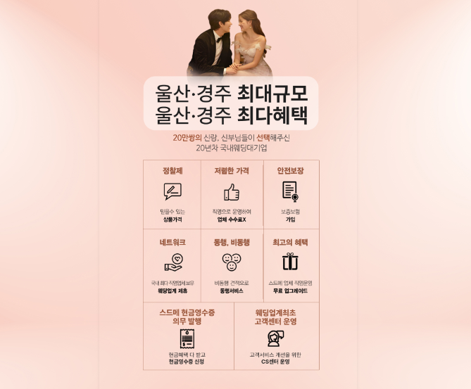
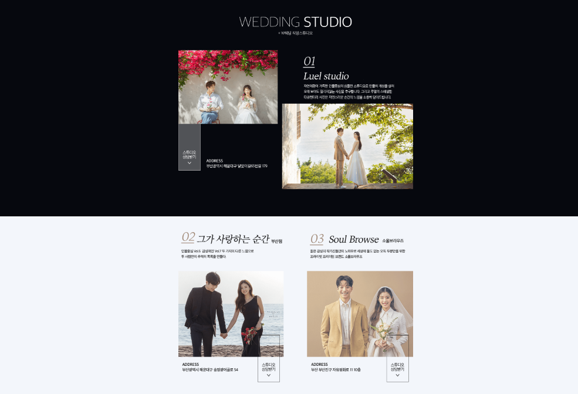
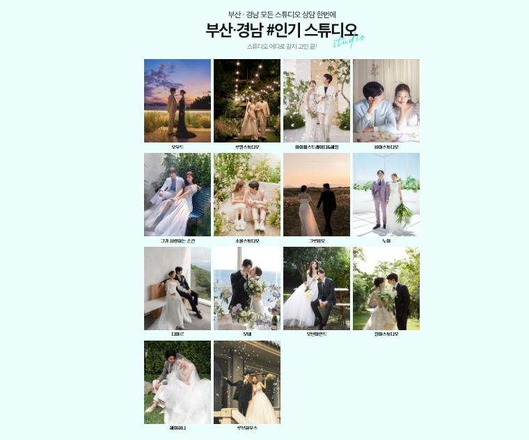
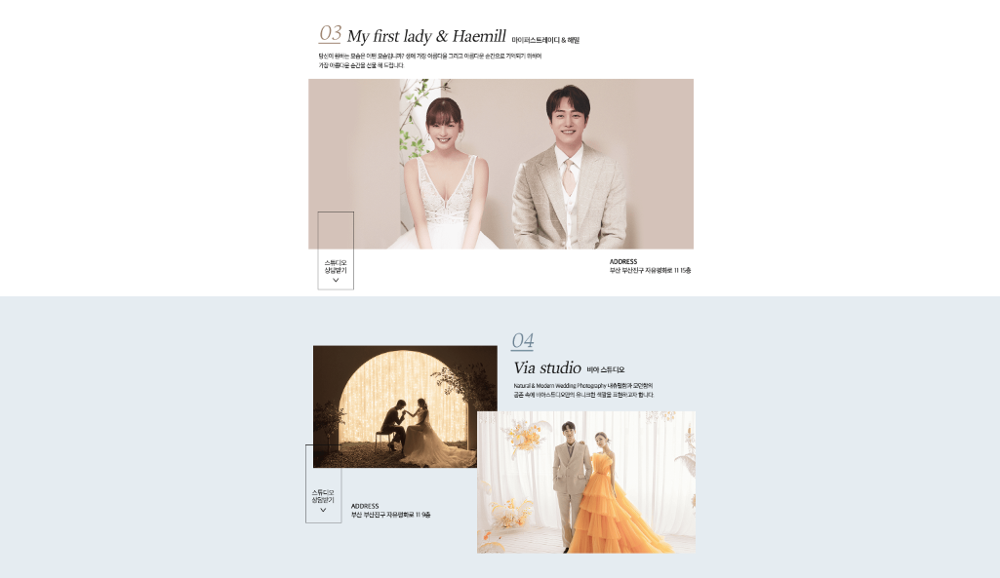

결혼 준비를 시작하면 웨딩홀과 스튜디오, 드레스, 메이크업, 예물·예복, 혼수와 신혼여행까지 알아봐야 할 항목이 많아집니다. 울산 롯데백화점 웨딩박람회를 방문하기 전에는 희망 예식 날짜와 지역, 예상 하객 수, 전체 예산과 우선 상담 분야를 먼저 정리하는 것이 좋습니다. 울산 지역 예식은 양산·경주·부산 등 인접 지역 하객의 이동까지 함께 고려하는 경우가 많아 예식장 위치와 주차, 대중교통, 차량 이동시간을 같은 기준으로 비교해야 합니다. 이 페이지에서는 상담 순서와 견적 비교, 계약 전 확인사항, 방문 후 정리 방법까지 단계별로 안내합니다.
날짜, 지역, 하객 수와 전체 예산을 먼저 정하면 상담 비교가 쉬워집니다.
기본 구성과 필수 추가금, 선택 추가 항목을 나누어 확인하세요.
변경·취소·환불 기준과 안내받은 혜택이 계약서에 있는지 확인하세요.
울산 롯데백화점 웨딩박람회에서는 무엇을 확인할까요?
웨딩박람회는 결혼을 준비하면서 필요한 여러 분야의 정보를 한자리에서 비교해볼 수 있는 행사 형태로 운영되는 경우가 많습니다.
예비부부가 자신의 예식 일정과 예산에 맞춰 필요한 항목을 살펴보고 결혼 준비 계획을 정리하는 데 활용할 수 있습니다.
참여 업체가 많더라도 모든 상담을 받을 필요는 없습니다. 웨딩홀과 스드메, 예물·예복, 혼수처럼 중요한 분야를 먼저 정하고 같은 질문과 같은 조건으로 상담해야 업체별 차이를 정확하게 비교할 수 있습니다. 울산 웨딩홀은 예식 가능일과 식대뿐 아니라 최소 보증 인원, 주차 가능 대수, 대중교통 접근성과 인접 지역 하객의 이동시간도 함께 확인하세요.
현장에서 강조하는 할인율보다 두 사람에게 필요한 구성과 실제 최종 결제금액이 명확한 상품을 먼저 비교하는 것이 좋습니다.

결혼 준비에 필요한 항목을 비교해보세요
웨딩홀과 스드메부터 예물과 혼수까지 결혼 준비에는 다양한 선택이 필요합니다. 각각의 구성과 조건을 비교해 자신에게 필요한 항목을 정리해보세요.
같은 이름의 패키지라도 실제 포함 범위는 다를 수 있습니다. 스튜디오는 촬영 콘셉트와 원본·수정본 제공 여부, 드레스는 기본 선택 범위와 상위 등급 추가금, 메이크업은 촬영·본식 횟수와 담당자 지정 비용을 확인하세요. 상담 내용을 휴대전화 메모나 비교표에 바로 기록하면 여러 업체의 견적이 섞이는 것을 줄일 수 있습니다.

💒 웨딩홀
예식 지역과 날짜, 예상 하객 수를 기준으로 조건을 비교해보세요.
👰 스드메
스튜디오와 드레스, 메이크업의 구성과 포함 항목을 확인하세요.
💍 예물·예복
원하는 스타일과 필요한 품목, 예산 범위를 정리해보세요.
🏠 혼수
가전과 가구 등 필요한 품목의 우선순위를 정해 비교해보세요.
| 준비 항목 | 기본 확인사항 | 추가비용이 생기기 쉬운 부분 |
|---|---|---|
| 웨딩홀 | 예식 가능일, 식대, 대관료, 보증 인원, 주차 | 꽃장식, 연출, 음향·영상, 보증 인원 초과 |
| 스튜디오 | 촬영 콘셉트, 의상 수, 원본·수정본 제공 | 추가 촬영, 원본 구매, 앨범 페이지, 야외 이동 |
| 드레스 | 기본 선택 범위, 피팅 횟수, 촬영·본식 포함 | 상위 등급, 헬퍼비, 액세서리, 추가 피팅 |
| 메이크업 | 촬영·본식 횟수, 신랑 포함, 담당자 지정 | 원장 지정, 얼리 스타트, 출장, 혼주 메이크업 |
| 예물·혼수 | 포함 품목, 제작·배송 일정, 사후관리 | 소재 변경, 추가 구성, 설치와 배송 비용 |
방문 전 결혼 일정과 예산을 미리 정리해보세요
현장에서 다양한 업체의 상담을 받게 되면 여러 조건과 선택지가 한꺼번에 제시될 수 있습니다. 방문 전에 필요한 내용을 정리하면 보다 효율적으로 비교할 수 있습니다.
전체 예산은 웨딩홀, 스드메, 예물·예복, 혼수와 신혼여행으로 나누어 분야별 상한선을 정하세요. 이미 받아본 견적이 있다면 기본 금액과 포함 항목, 추가 비용을 한 화면에서 볼 수 있도록 정리하는 것이 좋습니다. 새로 안내받은 혜택도 기존 견적과 같은 기준으로 비교해야 실제 절감되는 금액을 판단하기 쉽습니다.

계약 전에는 세부 구성과 추가 비용을 확인하세요
웨딩 관련 상품은 기본 구성 외에도 선택하는 옵션과 추가 항목에 따라 최종 비용이 달라질 수 있습니다.
상담을 받을 때는 가격뿐 아니라 포함되는 서비스와 추가 비용, 일정 변경과 계약 취소 조건도 함께 확인하는 것이 좋습니다.
당일 계약 혜택이 안내되더라도 적용 조건과 유효기간, 제휴카드나 지정 업체 이용 여부를 확인해야 합니다. 구두로 안내받은 사은품과 서비스는 계약서나 별도 확인서에 기재하고, 계약금과 잔금 납부 일정, 업체나 날짜 변경 시 발생하는 비용도 계약 전에 확인하는 것이 좋습니다.

패키지에 포함되는 서비스와 별도 결제 항목을 구분해 확인하세요.
등급 변경, 담당자 지정, 일정 변경 등 추가금 기준을 확인하세요.
불필요한 항목을 빼거나 다른 구성으로 변경할 수 있는지 물어보세요.
계약 시점과 예식일 사이 기간별 위약금과 환불 조건을 확인하세요.
남구·중구·북구·울주 하객 동선을 비교하세요
예식장 위치는 신랑·신부의 거주지만 기준으로 정하기보다 양가 가족과 주요 하객이 어느 지역에서 이동하는지 함께 고려해야 합니다. 울산 인근 예식장이라도 예식 시간대 교통량과 주차, 대중교통 편의에 따라 하객이 체감하는 이동시간은 달라질 수 있습니다.
🏙️ 남구·중구권
울산 도심 방면 하객의 이동시간과 주차 여건을 확인하세요.
🚗 동구·북구권
동구·북구 방면 하객의 도로 접근성과 차량 이동시간을 비교하세요.
🛣️ 울주·양산권
울주·양산 방면 하객의 광역 이동시간을 살펴보세요.
🚌 부산·경주권
부산·경주 등 인접 도시 하객이 많다면 이동시간을 확인하세요.
지도상의 거리만 보기보다 예식 시간대 실제 이동시간과 주차 동선, 엘리베이터 대기, 연회장 이동, 대형버스 정차 가능 여부를 확인하는 것이 좋습니다.
웨딩박람회 상담은 우선순위에 따라 진행하세요
현장에서 모든 부스를 순서 없이 방문하면 비슷한 설명을 반복해서 듣고 정작 중요한 상담을 놓칠 수 있습니다. 예식 날짜와 장소를 결정하는 웨딩홀부터 확인한 뒤 촬영과 본식 일정에 연결되는 스드메, 예물·예복, 혼수 순서로 상담하는 것이 효율적입니다.
웨딩홀과 예식 날짜
희망 지역, 날짜, 하객 수를 기준으로 가능한 웨딩홀과 비용을 확인합니다.
스튜디오·드레스·메이크업
촬영과 본식 일정, 기본 구성, 선택 범위와 필수 추가금을 비교합니다.
예물·예복과 혼수
필요한 품목과 제작·배송 기간, 분야별 예산을 기준으로 상담합니다.
최종 견적과 계약 조건
기본 금액, 추가금, 혜택 적용 조건과 변경·취소 기준을 확인합니다.
한 분야의 상담이 끝날 때마다 핵심 조건을 메모하고 두 사람이 의견을 맞춰야 업체별 내용이 섞이지 않습니다.
기본 가격이 아닌 최종 결제금액을 비교하세요
처음 안내되는 금액이 저렴해 보여도 필요한 옵션을 추가하면 실제 결제금액이 달라질 수 있습니다. 견적을 비교할 때는 기본 금액과 필수 추가금, 선택 추가금, 할인과 혜택을 각각 나누어 기록해야 합니다.
| 비용 구분 | 확인할 내용 | 비교 방법 |
|---|---|---|
| 기본 금액 | 처음 안내되는 패키지와 필수 포함 구성 | 업체별로 실제 구성이 같은지 확인합니다. |
| 필수 추가금 | 반드시 선택해야 하는 등급·시간·인원 관련 비용 | 기본 금액에 더해 최소 결제금액을 계산합니다. |
| 선택 추가금 | 원본, 앨범, 드레스 등급, 담당자 지정 등 | 두 사람에게 필요한 항목만 골라 예상 금액을 계산합니다. |
| 할인·혜택 | 당일 계약, 제휴카드, 지정 업체 이용 조건 | 실제로 충족 가능한 경우에만 할인으로 반영합니다. |
| 변경·취소비 | 날짜 변경, 업체 교체, 계약 취소 시 위약금 | 예상하지 못한 상황에 대비해 계약 전에 확인합니다. |
계약금과 중도금, 잔금의 납부 시기도 함께 정리하세요. 월 납부금이나 할인 금액만 보는 것보다 전체 결혼 준비 예산에서 각 항목이 차지하는 비중을 계산하면 예산을 초과하는 부분을 빠르게 찾을 수 있습니다.
상담 후에는 견적과 조건을 다시 정리하세요
박람회 현장에서 받은 설명은 시간이 지나면 서로 섞이기 쉽습니다. 방문 당일이나 다음 날 안에 업체별 총비용과 포함 항목, 추가비용, 혜택 유효기간, 담당자 연락처를 한 표로 정리하세요. 두 사람이 좋았던 점과 아쉬웠던 점을 각각 적어두면 현장의 분위기보다 실제 조건을 중심으로 결정하기 좋습니다.
필수 추가금을 포함해도 분야별 예산 상한선을 넘지 않는지 확인하세요.
촬영과 피팅, 본식 준비 일정이 두 사람의 생활 일정과 맞는지 살펴보세요.
사용하지 않을 서비스가 포함되어 있다면 다른 구성과 비교하세요.
변경·취소·환불 기준이 서면으로 확인되는지 살펴보세요.
방문 전 사전신청 정보를 확인해보세요
웨딩박람회 방문을 계획하고 있다면 행사 일정과 운영 방식, 사전신청 관련 내용을 미리 확인하는 것이 좋습니다.
행사 상황에 따라 세부 안내와 제공 혜택이 달라질 수 있으므로 신청 페이지에서 최신 내용을 확인한 뒤 방문을 준비해보세요.
사전신청 후에는 행사 날짜와 장소, 운영 시간, 입장 방법과 상담 가능한 분야를 다시 확인하세요. 희망 예식 날짜와 하객 수, 예산 메모, 이미 받아본 견적서를 준비하면 현장에서 비교하기 편리합니다. 관심 있는 분야를 미리 정하면 대기 시간을 줄이고 필요한 상담에 집중할 수 있습니다.
